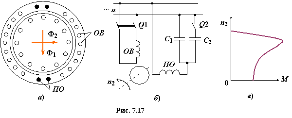
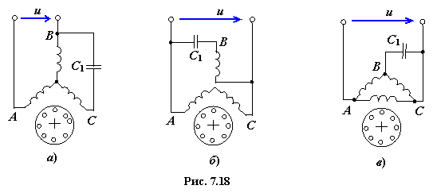

К микромашинам относят электрические машины малой мощности (от долей до 750 ватт). Они отличаются от обычных машин тем, что в большинстве случаев имеют меньшее число обмоток возбуждения (для возможности питания от однофазной сети
переменного тока). Рассмотрим принципы работы и основные характеристики отдельных типов асинхронных микромашин.
7.5.1. Асинхронные микродвигатели общего применения
Асинхронные микродвигатели (АМД) небольшой мощности (15...750 Вт) применяют в автоматических устройствах и в электробытовых приборах в приводах насосов (холодильники, кондиционеры), вентиляторов и т. д., т. е. там, где не требуется регулирование частоты вращения вала. В этих устройствах обычно используют однофазные АМД.
Основная обмотка ОВ статора однофазного АМД расположена в пазах, занимающих примерно 2/3 окружности статора (рис. 7.17а). При ее питании от сети однофазного переменного тока в машине формируется пульсирующий синусоидальный неподвижный в пространстве магнитный поток Ф1 с частотой f1.
|  |
При анализе работы однофазного АМД его пульсирующее магнитное поле разлагают на два вращающихся в противоположных направлениях поля с одинаковыми частотами вращения. При неподвижном роторе оба поля создают одинаковые вращающие моменты Мпр и Мобр, направленные встречно. Результирующий момент, действующий на неподвижный ротор, будет равен нулю, т. е. однофазный АМД не
имеет пускового момента. Если ротору придать начальную скорость внешней силой, то он будет развивать вращающий момент, причём направление вращения будет определяться тем, в какую сторону была приложена первоначально внешняя сила. Такие двигатели без пускового момента не находят применения.
Для получения вращающегося магнитного поля и создания пускового момента в АМД устанавливают вторую (пусковую) обмотку ПО, располагаемую под углом 90° к основной обмотке (рис. 7.17б), которую подключают к сети однофазного переменного тока через конденсаторы C1 и C2. Последние способствуют смещению в пространстве относительно друг друга магнитных полей Ф1 и Ф2, создаваемых магнитодвижущими силами обмоток ОВ и ПО (см. рис. 7.17а). Если конденсатор C1 и обмотка ПО статора остаются подключёнными к сети на все время работы АМД, то такой АД называют конденсаторным (конденсатор C2 подключают только в начале пуска). В данном случае обе обмотки выполняют одинаковыми. Такой двигатель имеет высокий коэффициент мощности cosφ, но большую массу и габариты. Механическая характеристика конденсаторного двигателя аналогична механической характеристике трёхфазного асинхронного двигателя (рис. 7.17в).
Кроме конденсаторных АМД, используют также однофазные АМД с расщепленными полюсами (с двумя катушками, причём вторая катушка расположена на одной части полюса и выполняется короткозамкнутой).
|  |
В качестве однофазных АМД могут быть использованы трёхфазные двигатели, которые подключаются к однофазной цепи совместно с фазосдвигающими конденсаторами С1, включаемыми по специальным схемам (рис 7.18).